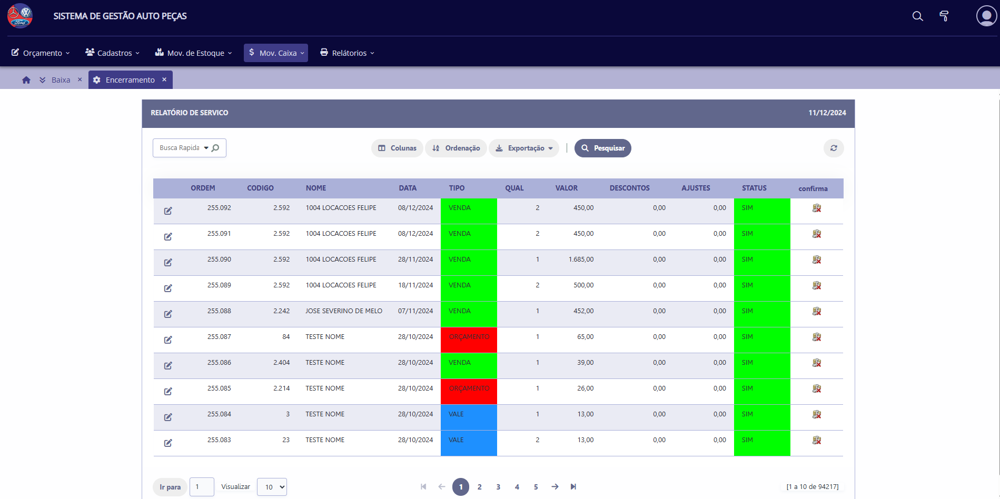

Na Seklin Sistemas, somos especialistas em desenvolver sistemas personalizados que atendem exatamente às necessidades do seu negócio
seja para otimizar processos, integrar tecnologias ou criar plataformas exclusivas.
Nossos sistemas são projetados com foco no usuário. Com interfaces amigáveis e fáceis de usar, garantimos que qualquer pessoa, independentemente do nível de experiência, consiga operar nossas soluções com facilidade.

Utilizamos as mais recentes tecnologias para desenvolver sistemas ágeis e robustos. Isso significa que você terá uma ferramenta confiável, com tempos de resposta rápidos e capacidade para lidar com grandes volumes de dados.

Entendemos que cada cliente tem necessidades específicas. Por isso, nossos sistemas são completamente adaptáveis para se ajustarem à realidade e aos desafios do seu negócio.
A proteção das suas informações é a nossa prioridade. Aplicamos as melhores práticas de segurança digital para garantir a integridade e a confidencialidade dos seus dados.

Estamos sempre disponíveis para ajudá-lo. Nossa equipe de suporte oferece assistência técnica rápida e eficiente, garantindo o pleno funcionamento dos sistemas e a satisfação dos nossos clientes.

Nossos sistemas podem ser integrados a outras ferramentas e plataformas, permitindo que você conecte diferentes áreas do seu negócio. Além disso, nossas soluções crescem junto com sua empresa, adaptando-se às suas demandas.

Confira as últimas atualizações dos nossos produtos e serviços. Em breve lançaremos uma nova ferramenta para automação de processos empresariais!
Mantenha-se informado sobre as tendências em tecnologia e inovação.
Rua Flor de Angelim, 208 - Bairro Manoel Bezerra Lopes, Caruaru - PE.
Email: seklinsistemas@gmail.com
Transformando seu desafio em inovação!